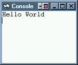

.text
main:
lw $t0,sub1add # get the first entry point in the Jump Table
jalr $t0 # pass control to sub1
li $v0,10 # return to OS
syscall
.data
sub1add: .word sub1 # Jump Table
sub2add: .word sub2
Confusion Alert:
the
instruction used to load $t0 with
the entry point to sub1
is lw $t0,sub1add .
We want $t0 to get what is stored in
the location sub1add,
which is what a lw
instruction does.
If you tried la $t0,sub1add
then $t0 would get the
address that
sub1add
stands for
not the address stored in that location.
Here is the full program.
main
calls the two subroutines.
This is a contrived example
that shows a jump table and a
jalr instruction.
It is not a sensible way to write a "Hello World" program.
.globl main
.text
main:
lw $t0,sub1add # get first entry point
jalr $t0 # pass control
lw $t0,sub2add # get second entry point
jalr $t0 # pass control
li $v0,10 # return to OS
syscall

.data
sub1add: .word sub1 # Jump Table
sub2add: .word sub2
.text
sub1: li $v0,4
la $a0,messH
syscall
jr $ra
.data
messH: .asciiz "Hello "
.text
sub2: li $v0,4
la $a0,messW
syscall
jr $ra
.data
messW: .asciiz "World\n"
How many bytes are in each entry in the Jump Table?